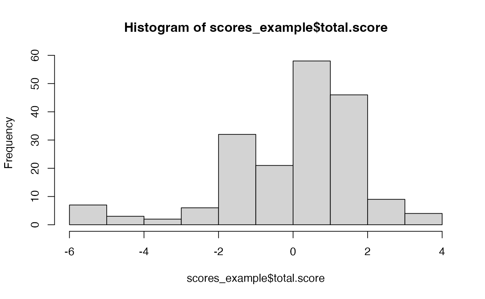

Governance Workflow
Olivia Beck
2024-02-22
Source:vignettes/governance-workflow.Rmd
governance-workflow.RmdGovernance Workflow
1. Get Input data
We assume the user already has the relevant 990 Efile data downloaded. Instructions for downloading the need 990 efile data, see .
We will use a subset of a test set that was already created. See
data-raw/01-get-example-data.R for details on how this data
set was created.
Step 2: Get Features Matrix
Use the get_features function to clean the data and
transform it into a features matrix.
features_example <- get_features(dat_example)
head(features_example)## ORG_EIN P12_LINE_1 P4_LINE_12 P4_LINE_28 P4_LINE_29_30 P6_LINE_1
## 1 770489324 0 0 1 1 0
## 2 591829834 0 0 1 1 1
## 3 362852762 1 1 1 1 1
## 4 200345249 1 1 0 1 1
## 5 232550366 1 1 1 1 1
## 6 540788685 0 0 1 1 1
## P6_LINE_11A P6_LINE_12_13_14 P6_LINE_15A P6_LINE_18 P6_LINE_2 P6_LINE_3
## 1 0 0 0 0 1 1
## 2 1 0 0 0 0 1
## 3 1 0 0 0 0 1
## 4 1 1 1 0 0 1
## 5 1 0 0 0 1 1
## 6 0 0 0 0 1 1
## P6_LINE_8A
## 1 0
## 2 1
## 3 1
## 4 1
## 5 1
## 6 1Step 3: Calculate the Scores
Use the get_scores function to get the governance
scores.
scores_example <- get_scores(features_example)## Rows 11,27,48,57,110,125,132,150,152,159,167,188 have NA values in the features. They will not be included in the output.
head(scores_example)## ORG_EIN P12_LINE_1 P4_LINE_12 P4_LINE_28 P4_LINE_29_30 P6_LINE_1
## 1 770489324 0 0 1 1 0
## 2 591829834 0 0 1 1 1
## 3 362852762 1 1 1 1 1
## 4 200345249 1 1 0 1 1
## 5 232550366 1 1 1 1 1
## 6 540788685 0 0 1 1 1
## P6_LINE_11A P6_LINE_12_13_14 P6_LINE_15A P6_LINE_18 P6_LINE_2 P6_LINE_3
## 1 0 0 0 0 1 1
## 2 1 0 0 0 0 1
## 3 1 0 0 0 0 1
## 4 1 1 1 0 0 1
## 5 1 0 0 0 1 1
## 6 0 0 0 0 1 1
## P6_LINE_8A ML1 ML2 ML4 ML3 ML6 ML5
## 1 0 1.3150144 -4.0897713 -0.5712158 -0.4645426 -0.45730556 -1.4713741
## 2 1 -0.9834699 0.9442642 -1.4340618 -0.3710991 0.27909392 0.5775306
## 3 1 1.9897169 0.2668866 -1.8047175 -0.5576148 -0.06883326 0.8773298
## 4 1 1.5774569 -0.3725415 0.3048902 -0.5663688 0.14764842 0.8502803
## 5 1 1.9636345 0.4405332 -1.4312650 -0.5663371 -0.18596356 -0.0311122
## 6 1 -0.8691193 1.3557713 -0.8056218 -0.3721944 -0.94666685 -0.2603762
## total.score
## 1 -5.7391949
## 2 -0.9877421
## 3 0.7027677
## 4 1.9413655
## 5 0.1894898
## 6 -1.8982071
hist(scores_example$total.score)